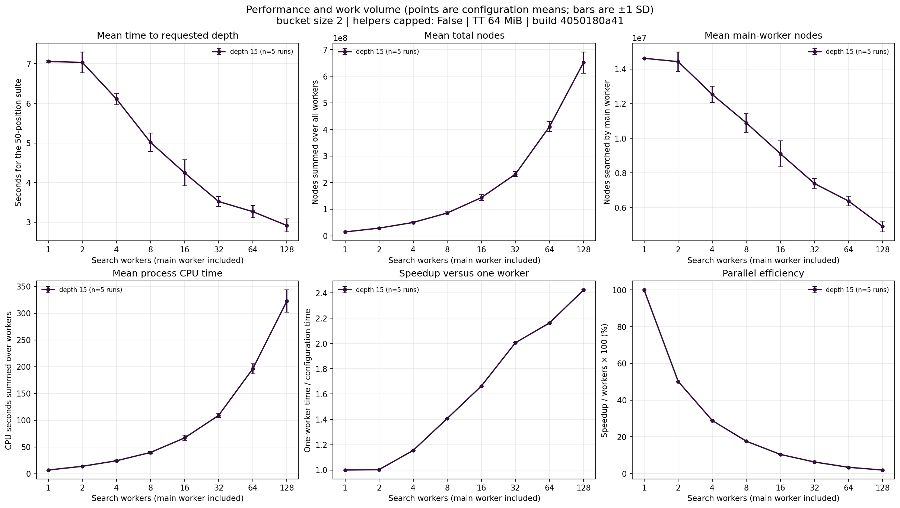
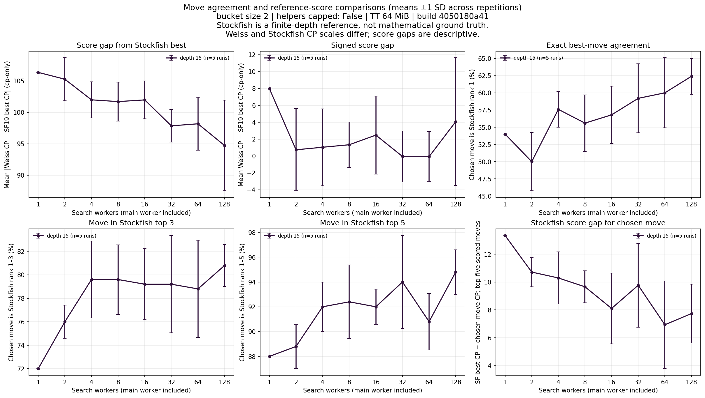
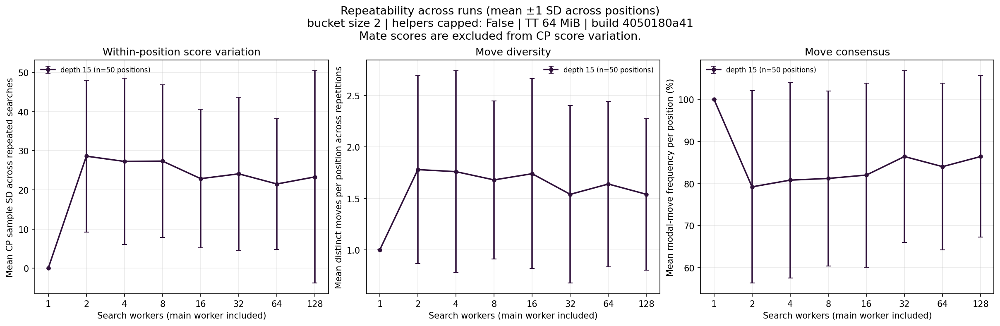

Generated from completed experiment CSVs. This script only analyses saved data; it does not run Weiss or Stockfish.



configuration_summary.csv has run-level means and standard deviations; position_summary.csv exposes per-position runtime, nodes, score spread and move stability.
stockfish_observations.csv contains the row-level matched reference results; stockfish_configuration_summary.csv aggregates agreement and score comparisons by configuration.